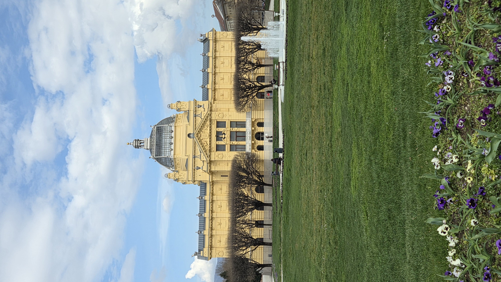
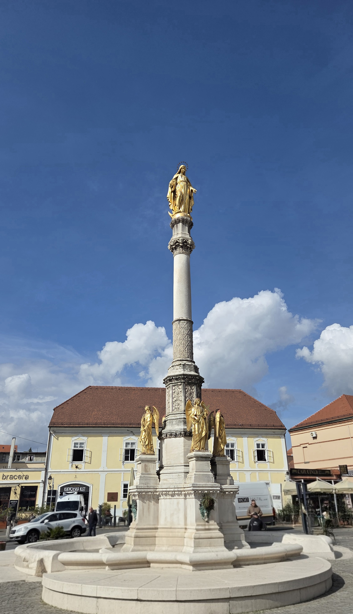
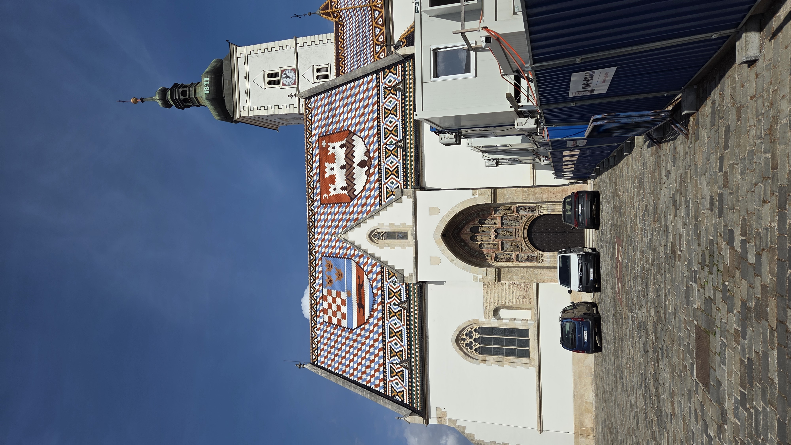

12 Maggio - Alla scoperta della capitale croata



Il terzo giorno ci siamo diretti a Zagabria (Zagreb), la capitale politica ed economica della Croazia. La città è caratterizzata da una netta divisione architettonica e storica tra la "Città Alta" (Gornji Grad), il nucleo medievale situato sulla collina, e la "Città Bassa" (Donji Grad), ricca di piazze ampie, parchi e palazzi in stile austro-ungarico.
La nostra visita guidata ci ha portato ad ammirare la maestosa Cattedrale di Zagabria, con le sue imponenti guglie gemelle visibili da quasi ogni punto della città. Successivamente, abbiamo passeggiato fino alla Chiesa di San Marco, famosissima per il suo tetto colorato composto da piastrelle smaltate che raffigurano lo stemma medievale della Croazia, della Dalmazia e della Slavonia, insieme allo stemma della città di Zagabria.
Ció che mi é piaciuto maggiormente della nostra visita di questo giorno é che abbiamo avuto molto tempo libero in cui potevamo esplorare la cittá da soli. In particolare, quando ci siamo fermati per mangiare ad un McDonald's abbiamo fatto conoscenza con un gruppo di ragazzi del posto, con cui abbiamo passato la maggior parte del nostro tempo e con cui abbiamo passeggiato per le vie principali della cittá